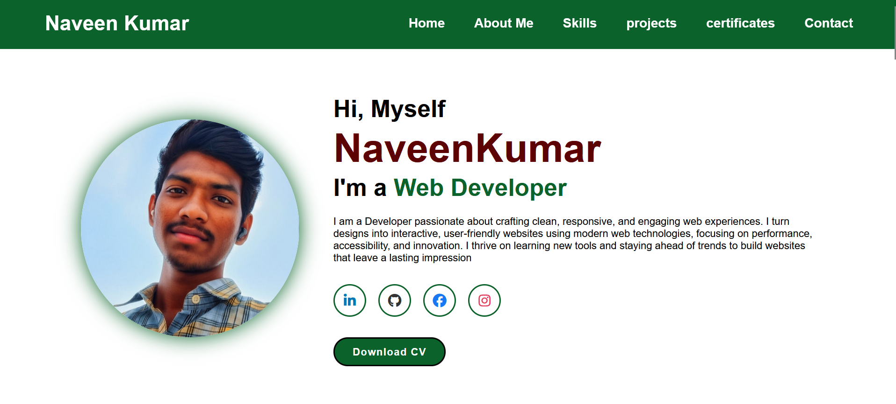

Personal Portfolio

This project is a responsive personal portfolio website built using HTML, CSS, and JavaScript. It showcases my skills, projects, and professional background through a clean and modern design. The layout is structured using Flexbox and CSS Grid, while interactive elements and smooth scrolling were implemented with JavaScript to enhance user experience. Media queries were added to ensure optimal viewing across desktops, tablets, and mobile devices. This project emphasizes visual storytelling and user-centric design.
Challenges Faced
- Responsive Design: Ensuring the portfolio looks seamless on all screen sizes required careful planning of grids, flex containers, and media query breakpoints.
- Interactive Elements: Implementing hover effects, animated skill bars, and project modals with smooth transitions required a strong understanding of CSS animations and JavaScript.
- Content Organization: Structuring multiple sections such as About Me, Skills, Projects, and Contact while maintaining clarity and easy navigation was a challenge.
- UI/UX Consistency: Keeping consistent typography, spacing, and color schemes throughout the site to reflect a professional personal brand.
- Code Maintainability: Organizing CSS and JavaScript for scalability without a framework, making it easy to update and add new sections in the future.